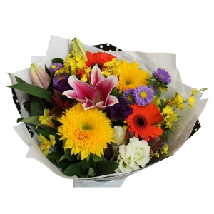
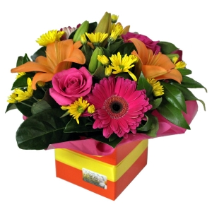
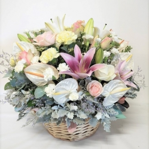
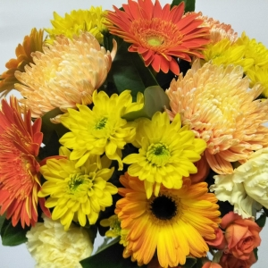
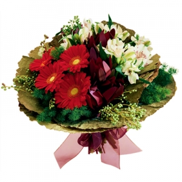
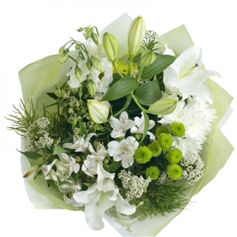
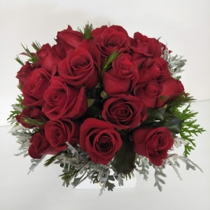

Name
Description
Price

Tropical Wreath
This tropical wreath is a big mix of flowers that includes roses, tropicals and mixed cottage flowers. Tropicals are seasonal, and the content will vary depending on the season. The colours combine to make a celebration of life.
$150

Colour Pot
This bright and happy bouquet is one of our top sellers. It is a mix of different flowers and foliage that will brighten up anyone’s day.
$100

Starburst
This is a bright colour mix of Roses, Gerberas and Lillies. A bright box of flowers in orange, pink and yellow.
$70

In Our Thoughts
This cane basket is full of pastel flowers and soft grey foliage. Just a hint of colour away from white.
$150

Hello Yellow
This is a big bright bouquet in yellows and orange. Huge imported disbud chrysanthemums, spray roses from our flower farm, and fresh Gerberas from our grower in Woodford, Queensland.
$100

Graceful Lady
Clusters of Gerberas and groupings of Princess Lilies and Burgandy Leucodendrons are wrapped in Lotus leaf, make this a very graceful bouquet.
$80

Sage
A classic bouquet of lightly scented white Oriental Lilies, green Chrysanthemums and seasonal flowers.
$55

Red
A tight bouquet of 18 red roses with grey dusty miller foliage. This bouquet is highly scented with rose geranium.
$150